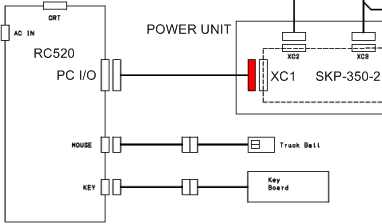
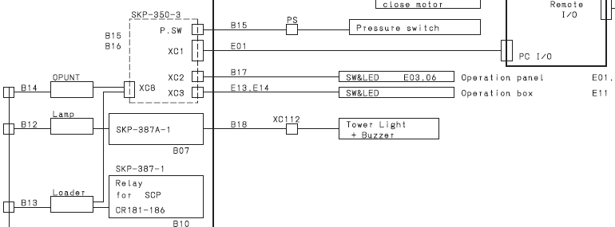

Service History
Subject: START button at front operation panel not functioning
Handler Model: NS-7000 #245 (S/N: 18971)
Customer No: NS70-18
Controller: RC520 (S/N: 01-20227)
Date: 17 Oct 2007
Symptom
START button at front operation panel not functioning.
Action
Re-sit I/O cable connector XC1 in handler's Power Unit (Power Supply box) ok.


Cause
Loose IO cable connector XC1in handler's Power Unit.
Remarks
Normally, in MMI, after press Power On on Front Operation panel, the RESET button will light up and MMI status windows show HALT.
When Front or Rear Operation Panel cannot function, on software side check the following:
1) In SPEL CT, ensure "Main" set as "Main Function"
2) In SPEL CT, ensure "startup" set as "Background Function"
3) SPEL CT set as "A" mode (so call AUTO mode) before switch back to MMI.
Files in Project corrupted also can cause operation panel not functioning.
When 1A fuse blown or XC4 disconnected on SKP-350, Front Operation panel no light, RESET no light, START & HOME cannot function, COVER OPEN button cannot light up when pressed, MMI always show "Power Down". MMI cover door icon is displayed.
XC4 connect the 1A fuse is for incoming 24V(from Power unit) to the SKP-350.
Connectors on SKP-350:
XC1 Connect to PC I/O Board in RC520
XC2 Connect to Front Operation Panel
XC3 Connect to Rear Operation Panel
XC4 Receive incoming 24V
T.MODE To turn on hot temperature
P.SW Connect to sensor for incoming factory compress air
D.SW Connect to E.stop board SKP428
XC7 Connect to Power Unit for 24V-1, CR1, POWER ON
XC8 Connects buttons ONE CYCLE, COVER OPEN, STEP, T.START